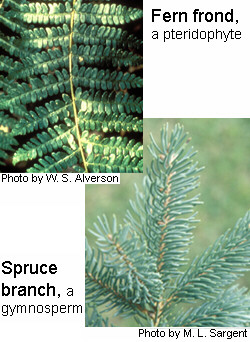
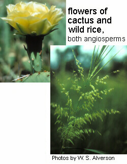

This guide applies to the Chicago Region and is not complete for other regions.
Guide to Plants of the Chicago Region
Use the Family Index and Genus Index to see alphabetical lists of included plants. At the top of the page you can Search for plants by name. For a complete list of the plant species, subspecies, and varieties represented in the Chicago Region, see the Scientific Name Checklist.
Vascular PlantsThe vPlants site currently provides information on vascular plants, a group named for the special transport tissues (circulatory system of xylem and phloem) they possess. The vascular plants make up the great majority of the land plants living today. There are two categories of vascular plants: non-flowering and flowering. Within these categories there are three main groups: |
Pteridophytes (non-flowering spore plants)The pteridophyte group includes ferns, horsetails, club mosses, and other vascular plants without seeds. They reproduce by spores formed on the surface of leaves, or in cone-like structures. The spores grow into a short-lived, haploid, gametophyte stage, which produces gametes. The male and female gametes unite to form embryos, which grow into adult, sporophyte (spore-producing) plants. |
Gymnosperms (non-flowering seed plants)The most familiar examples of gymnosperms include conifer trees like pines, spruce, fir, and other plants commonly thought of as "evergreen" (though some lose their leaves in winter or in dry seasons, such as larch and ginkgo). They reproduce by seeds, sometimes in cones, but do not have flowers or fruits. |
Angiosperms (flowering seed plants)The angiosperms include all flowering plants. All angiosperms produce flowers as their reproductive structures, though not all flowers are showy or even conspicuous. Flowers produce fruits that contain seeds. Angiosperms are by far more dominant on Earth today than are the gymnosperms and pteridophytes. It is the most diverse plant group and includes organisms from lawn grasses to oak trees. |
Non-vascular PlantsThese plants lack a true vascular system. Many have a life cycle that has two separate stages. In most cases they require wet habitats or rainwater to allow the sperm to swim between individuals in order to fertilize the eggs. |
|
BryophytesBryophytes include mosses, liverworts, and hornworts. These are smaller, green plants, which reproduce by spores. Their green, visible, free-living phase of the life cycle is actually the haploid generation, called the gametophyte. This phase produces male and female gametes, which unite, and consequently develop into a very small structure pertaining to the spore-producing sporophyte phase. The haploid spores are then released, and grow into a new gametophyte plant. Bryophytes also often reproduce asexually. |
|
Green AlgaeThe green algae are the simplest of green, photosynthetic plants. Growth forms can be single cells, filaments, branched networks, or small leafy patches. They display many different life cycle types, usually involving spores at some stage. |
|
Related Pages
Non-flowering vascular plants
Flowering plants
Information provided on this page applies to the Chicago Region and may not be relevant or complete for other regions.
Footer Menu
Funded by Institute of Museum and Library Services (IMLS)
Citation: The vPlants Project. vPlants: A Virtual Herbarium of the Chicago Region. http://www.vplants.org
Copyright © 2001–2009 The vPlants Project, All Rights Reserved.
The Morton Arboretum, The Field Museum, Chicago Botanic Garden, Additional Partners